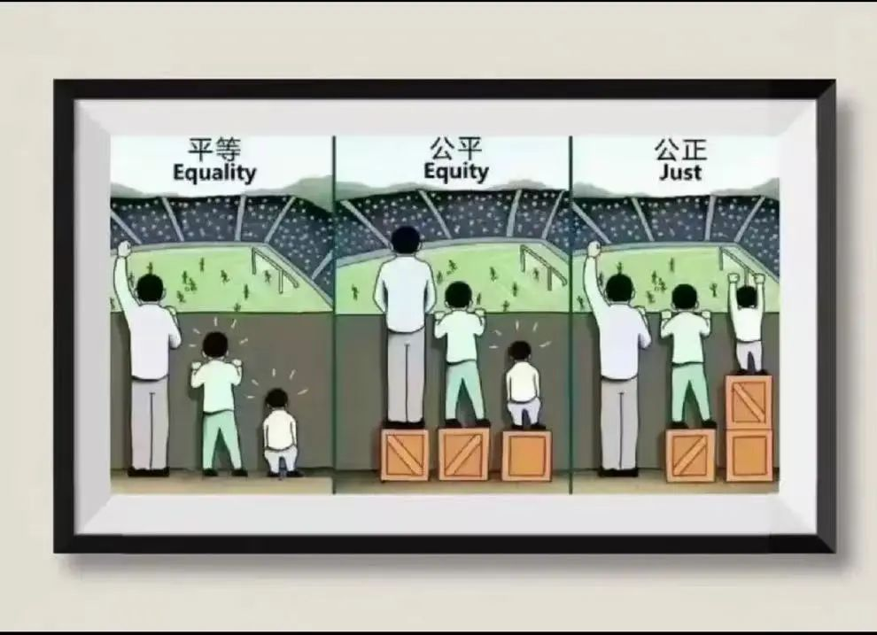

投稿 | 独属Web3的浪漫幻想，点对点的情感价值交换
作者: 行天春彦
分类:
Web3, DAO, 加密人文, SeeDAO, 区块链
一轮所谓的牛市之后，crypto又落得一地鸡毛。（文章背景写于9月中旬）这一轮围绕Web3的概念，服务BTC和EVM两大阵营的二层网络和配套生态接连发布，围绕新老加密货币和资产的金融游戏再次轮番上演。看着自己手中大起大落的币价和各种归零的资产，我陷入沉思，是否有可能让Web3参与者，让DAO成员彻底摆脱加密经济的乱象？让去中心化更好地服务于各种资产？我似乎找到了答案，一种拒绝“友情价”的答案。
最初我对Web3的概念并没有清晰的认知，只是将它理解成“与区块链技术联系起来的新一代互联网”，这种片面的认识在我跟随SeeDAO深耕Web3领域多年的前沿大佬们学习交流过后，逐渐发生了变化。
Web3在我现在的理解中，是借助区块链去中心化的特点创造以一切权益自决为基础的公平环境。要保证定义的准确性，还需对“如何定义去中心化”和“如何定义公平”等问题进行讨论。而要讨论这些问题，我选择从去中心化的底层逻辑着手。去中心化应该仅仅是一种技术实现，还是更需要一种社会和文化态度的转变?
去中心化存在的必要条件是所有人都参与到这个体系中共同广播、验证、记录信息，并将信息分散储存。因此对于无心参与体系维护，纯粹的使用者来说，如果他想要确定这种去中心化的体系内部是否真正按照去中心化的逻辑运行，就必须自己参与到体系的维护中。这是合理的，毕竟没有调查、没有实践就没有发言权，但这也就将人群做出了划分。愿意参与体系维护，参与社区治理的是一类人，他们付出“劳动”所以拥有权利。不愿意参与维护和治理，只想享受便利的是另一类人，他们支付“资产”换得享受便利。也就是说，在只管享受的“另一类人”转变态度之前，整个体系对于他们来讲仍然是“中心化”的。而有些时候，真理是掌握在少数人手中的，当现行的体系中出现不可调和的矛盾或新的共识，区块链网络便会迎来新的分叉，从原本的路线上脱离出来。这种解决问题的逻辑中似乎有一部分可以归结为“解决提出问题的人”，在某种意义上这也是中心化的方法。但只要在新形成的社群中继续坚持去中心化的实践，直到所有的社群都在去中心化的实践中找到了自己的共识，中心化也就变成了无稽之谈。
“少数服从多数”原则在区块链网络中是否会导致权力过度集中?
我们知道区块链网络的底层共识是凭借“少数服从多数”的判断标准达成的。在区块链网络中，为了保证整个体系能够得到更多的人拥护以至长久地保有活力，整个体系的应对逻辑是：保证体系运行下去对50%以上的节点有利，提升破坏的成本，从而降低体系被少数人控制的风险。这里就产生新的问题，网络通过节点维持，节点对应的是设备或人，那么根据目前的贫富差距可以想见，占有大量生产资料的人群似乎有能力通过添置节点让己方势力超过现有节点的半数以上。而当大部分节点代表的是小部分人的利益时，去中心化也就变得名存实亡了。结合去中心化存在的必要条件来考虑，少数服从多数的这套逻辑存在着逼迫拥有选择权的人在有限的选项内进行零和博弈的嫌疑。而与区块链类似的情形已经在中国特色社会主义社会中出现。社会成员只享受体系提供的便利而不考虑对其进行维护，便会被判定为“另一类人”，而“一类人”为了维护整体利益就要被迫做出选择。这里的选择往往是难以抉择的，是维持“一类人”继续发光发热，还是放弃权力变为“另一类人”只顾享受？一旦“另一类人”成为了整个体系中的大多数，新的中心化就将不可避免且无可指摘地出现。
在去中心化的世界里，人性的选择如何影响公平性和资源分配?
我想经过这一轮牛市的教育，我逐渐意识到去中心化不仅是一个概念，一句口号，更是一种态度，一种能力。我想，不论是胡老师在文中描述的历史发展规律，还是定慧在报告中提到的“crypto重回赌场”，都将一个残酷的现实摆在我们面前：在去中心化设想落地的任意阶段，如何确立人性选择的标准仍然会是主战场。而目前在Web3和Crypto中的绝大多数参与者只是参与到以去中心化记账为基础的项目和活动中去，却从未真正尊重和理解去中心化是从何处来又到何处去的。在DAO内的许多成员也只是关注自己可以通过获取身份享受到的权益，而并未真正主动对社区治理和发展贡献力量。在我所知的，最初的区块链比特币网络，其功能即为所有用户提供一个安全的，可以绕过第三方金融机构完成“点对点”现金支付的网络系统。而在今天，去中心化以公开透明、不可篡改的特点为我们熟知，但仍有大量的骗子通过“去中心化”的伪装完成各种形式和各种意义的行骗。之所以“去中心化”仍会被选为犯罪的工具并且在社区内产生作用，就好像观众们围观“三仙归洞”的戏法。表演者将他愿意展示给观众的信息诚实地展示出来，确实总共有三个球三只碗一根筷子，但是他不会说球是有弹性的，他也不会说每一个动作都是有意为之。观众看到的是把球放进碗里，是那根普通的、用以自证清白的筷子，看不到的是那恰到好处的手法。
在社区治理中，个体能否真正发挥主导作用，还是不可避免地会有少数人掌控大局?
答案或许就掌握在你我自己手中，一切的根源都来自我自身，引用哲学的概念即“主体性意识”。正是因为我意识到自己的存在，意识到人与人的区别，并希望自己的存在获得他人的认同，才需要去中心化。毕竟我既无法在不使用武力的情况下要求他人完全遵循我设立的标准，也无法在不进行欺骗的情况下使得他人完全承认我宣称的权利。有幅漫画就为公平的情形做出了非常经典的诠释。对于高个子来说，木墙并未影响他观看比赛；对于一般人来说，木墙对观看比赛造成了有限的影响；而对于矮个子来说，木墙阻碍了他观看比赛。
那么基于个体初始条件的差异，在同一个情境下不同人的认识和标准就都存在着偏差。如果矮个子和高个子就木墙高度的设计表达了矛盾的认识，就需要互相尊重和理解，需要一个体系来保证不同的认识和标准在其中得到充分的阐述来帮助具备不同条件的群体互相理解，我想这就是我们对去中心化最朴素、最根本的需要。
因此，每一个希望加入去中心化世界的个体都应做好充分的觉悟，从一开始就肩负起相应的责任并履行与之匹配的义务。而究其根本，在去中心化的环境中，每一个人除了参与体系的维护，还要能够了解事物的全貌，理解事物的发展，甚至化解事物的危险。去中心化在现有社会和经济结构中能够真正实现吗?
今天在区块链上实现的去中心化是基于资产和权益的分配，这是我们需要的，但还未触及根本。我更倾向于将终极的去中心化想象成摆脱对经济和金融的依赖，关于情感表达的去中心化，也就是更为纯粹的点对点的情感价值交换。我的逻辑是建立在“以付出精力和情感的多少衡量价值的大小”标准之上的。考虑到那些无处不在的差异，只有每个人的精力和情感是不可复制并随着时间流逝持续损耗的，且不论东西方文化对真挚情感的歌颂都是永恒的。也就是说，相较于各种面向市场销售的资产，个体根据自身的生活实践，专为特定对象投入真情实感完成的作品在根本上存在着基础的共识，且有其独特的意义。在这种逻辑下，价值的判定可以脱离建立在经济系统和货币体系上简单的资源换算或需求预算，根据人们实际的能力和付出，让交易回归传统的点对点的“以物易物”的状态。否则仍会因为掌握资源多寡的差异，难以保证真正的去中心化。就好像在一张进行德州扑克游戏的牌桌上，拥有巨量资金的玩家比对手拥有更多一次性赢取对方全部资金的机会。而对于目前这些在各个生态中掌握巨量资源的先行者们，很难保证他们不利用手中的资源完成对“鹅城”的实际控制。
人类情感和价值体系是否能够通过去中心化彻底重新构建?
尽管提出了这样的设想，但我并不知道有限的精力和情感能否成为人们最后的依仗。毕竟目之所及，人们都穷尽一生想要超脱所有的限制，人类的科技发展和政治活动更是相继成为这一状态的代表。不论是转基因、胚胎移植还是换血等生物医疗技术，在我看来大多是在经济系统中货币流动性的支持下出现的魔鬼。毕竟它们早已脱离了“治病”的范畴，本质上已将正常认定为病态，而这些病态的东西正该是去中心化抵抗的。所以我坚信，想要通过去中心化彻底构建公平的价值交换体系就必须回归自然。自然赋予我有限的生命和感官，因此我得以支配有限的精力和情感，从而获得有限的经历和体验。在有限的经历和体验中，我可以寻找自己的兴趣，发展自己的专业，确立自己的意义。而在兴趣、专业和意义中，我通过任意方式进行创作完成自我表达，只不过这些表达有的是无形的意识，有的基于我的身体，有的基于语言和文字，有的基于某种物质和其特殊的形态。这些意识、身体、文字、物质只有与我的个人表达相结合，才是我所拥有的真实的资产。而这些资产对于他人来说只有有形的、物质的部分是有价值的，因为我的经历和体验对于他人就像他人对于我一样，不是最重要的，哪怕被认为是最重要的，也是建立在某种需要之上的。就好比一些经典的舞蹈和一些经典的产品，之所以受到追捧，是因为追捧它们的人有各自的需要，并非真正关心我的情感。因此不论是何种资产，与我的个人表达有关的部分都是缺乏流动性的，而有形的、物质的部分则是可以加入货币的流动性中去的，在这里我想到汽车文化或许可以借来比喻。无论我作为第一任车主在改装和升级中投入了多少精力和情感，如果其结果与下一任车主在经历和体验中找到的兴趣、专业和意义都未能存在交集，那么这辆车的价值都将大大降低，甚至变得一文不名。货币流动性就这样成为一个基于零和博弈逻辑完成个人表达与有形物质交换的工具。参与货币体系中越多的人放弃个人表达，货币流动性也就越强。而资产流动性与之正相反，个人表达越能够被理解和感受，资产流动性也就越强，就像各种艺术作品。但在今天艺术作品的具体价值是受各种因素影响的，是受经济系统中的货币体系和金融策略裹挟的，不论价值多高都是将艺术家投入的精力和情感拉进经济系统进行零和博弈的结果。
人的最终理想是什么?它是否真的可以通过去中心化完全实现?
直到目前，区块链能解决的都还是在交易过程前后存在的信任问题。但资产交易本身存在的交易双方价值不匹配的问题仍未被关注到。当然，并非不想解决这样的根本问题，而是还远没有能力解决。当我们对到底要去向何方有着明确且肯定的答案：尊重和延续从古至今仍在运行的，通过无数人的经历和体验形成积累的这套模式，解决根本问题的可能才刚刚出现。如果人们一定要突破所有的限制，完成机械飞升直至控制一切，那么零和博弈的逻辑势必会把目前我们所建立的一切都消耗殆尽。而回归原始，利用去中心化提升资产的流动性，或许可以遏制因为发行货币而导致的通胀或通缩，遏制凭借货币流动性无限放大的欲望和无限拉低的底线，让人不再是被资本异化的资源，让资源回归人的手中。而拥有实际的情感投入和价值产出，或许可以杜绝许多资产泡沫，减少市场中混乱无序的行为。根据付出精力和情感的比重判断价值，或许可以实现人与人之间的平等，实现跨越社会身份和角色的公平。试想一个受种子公司控制的农民同志，无论他多么辛勤劳作，种出的粮食都很难帮他实现财务自由，甚至经济压力不降反升的同时还会有人说他是种子公司的帮凶。那么去中心化提供给他的交易不能篡改又有多大意义呢？可如果以这位农民同志通过自己一整年的全情投入收获的粮食可以换得其他人一整年的劳动成果呢？我们这些碳基生物是不是就能够重新审视自己生命的价值？当农业生产者饱含深情地耕种，工业生产者实事求是地设计，服务业劳动者真心实意地服务，所有的人都全情投入自己喜欢的、适应的生产或创造方式完成个人表达，价值才能真正得到累积，共识才能真正得到检验，终极的去中心化才有可能真正实现。我不能否认自己的异想天开，但我想人在理解“付出精力和情感后完成的个人表达”才是自己真正的资产后，就能接受和理解不同资产上存在的来自自己和他人的个人表达，也就真正赋予了人类情感以价值。如此也才有可能跳出经济系统通过货币体系为各种商品设置的零和博弈陷阱，始终以饱满的情感继续生活，避免自己成为金钱和权力的奴隶，从而始终保留维持去中心化的“经济”基础。